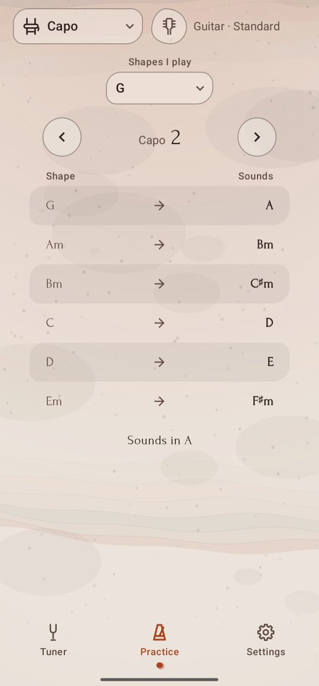

Capo
The song is in A, but you'd rather play the G shapes you know? Pick your shapes, move the capo, and Twangle shows what each shape sounds like and which key you are in.
Find the capo's place
- Tap the Practice tab, then the tool button at the top left, and pick Capo.
- Under Shapes I play, pick the key of the shapes your fingers know: C, D, E, G, A, Dm, Em or Am.
- Tap › to move the capo up a fret, ‹ to move it down, from No capo to fret 11.
- Stop when the line under the table says the song's key, for example Sounds in A.
The table
It lists the six chords you play most in your shapes' key, each with the chord it sounds with the capo on: Shape on the left, Sounds on the right. With G shapes and the capo on fret 2, your G sounds A, your Am sounds Bm, and so on, as in the picture. Read the song's chords on the right and play the shapes on the left.
Tap a row to open its shape in Chords, on the tuning you play.
Good to know
- Chords are written the way the key writes them: E♭, not D♯, in a song in E♭.
- Fret 12 would sound the same chords as no capo, an octave up, so the capo stops at 11.
- Twangle remembers your shapes and the capo's place.
- The table is the same in every tuning, as a capo raises every string alike; the chart a row opens is worked out for your tuning.
- The 5-string banjo's short string isn't in the table yet; for the banjo the table's place says so.
For the curious: the sum behind it
Each fret raises a string by one semitone, and a capo raises every string at once. So the capo's fret is the number of semitones from your shapes' key up to the song's key: from G to A is 2, from C to E♭ is 3. Shapes only go up, so a song lower than your shapes goes round the octave: a song in E♭ is D shapes at fret 1, C at 3, A at 6, G at 8 or E at 11. Minor songs keep minor shapes: C minor is Am shapes at fret 3.
The six chords are the usual ones of a key: in a major key the I, ii, iii, IV, V and vi chords (in G: G, Am, Bm, C, D, Em), in a minor key the i, III, iv, v, VI and VII.
